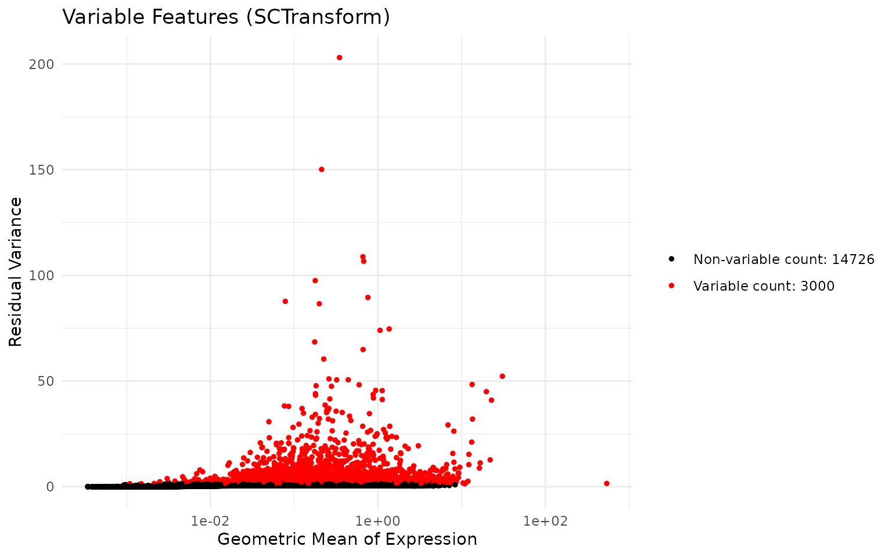
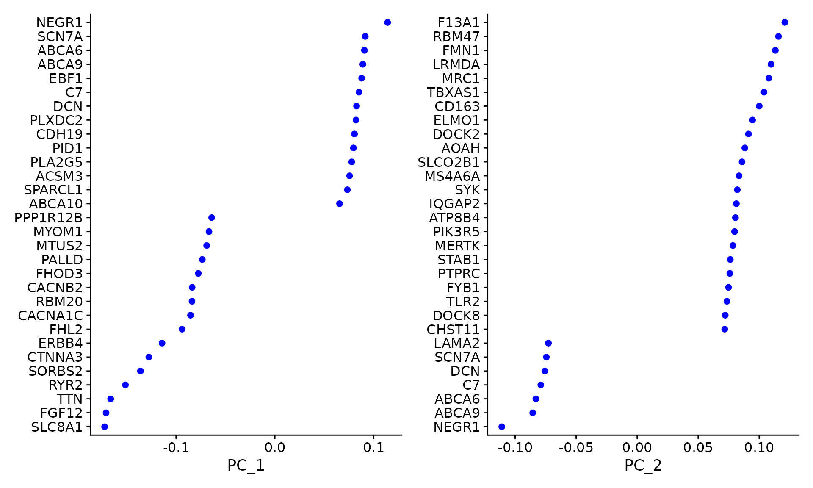
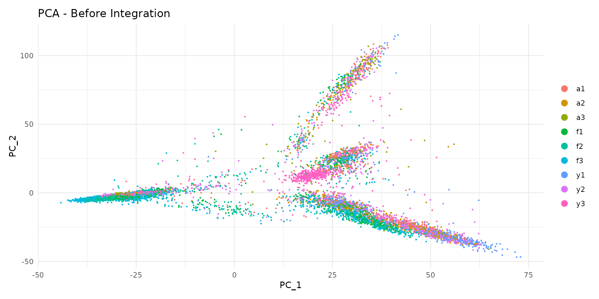
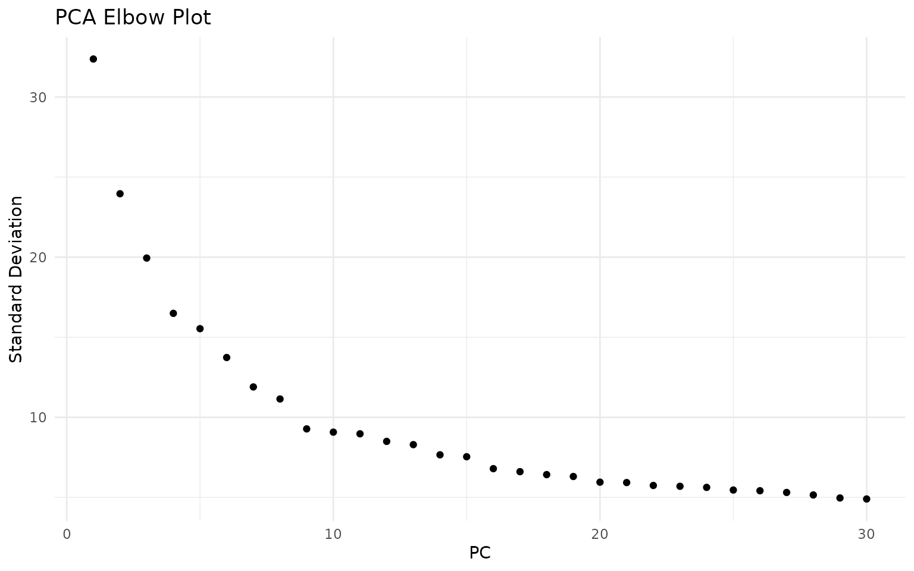
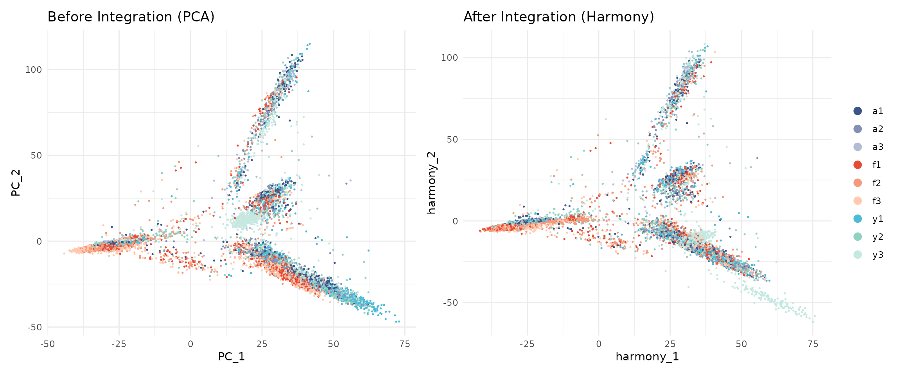
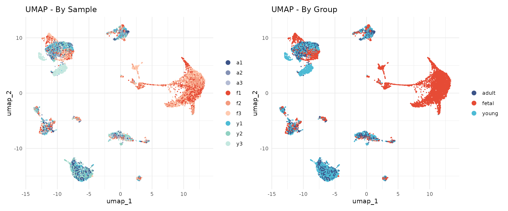
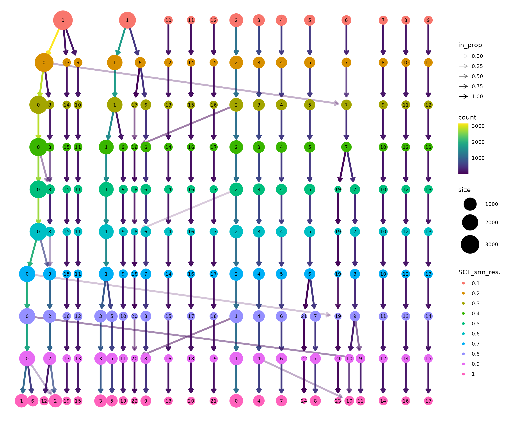
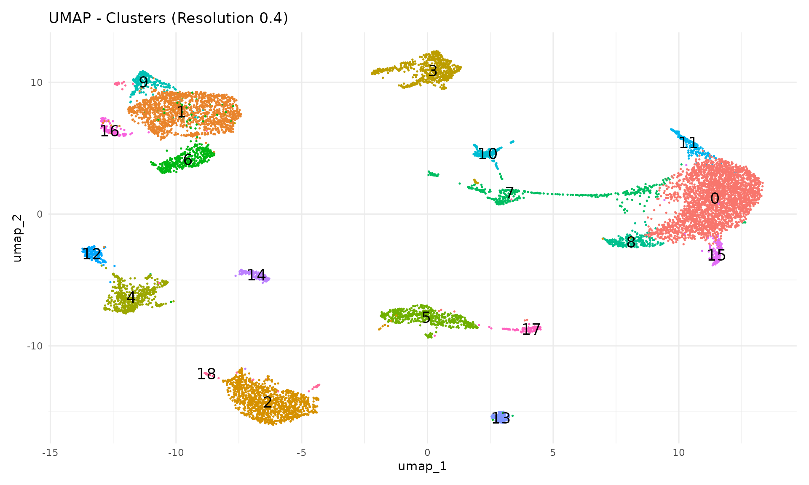
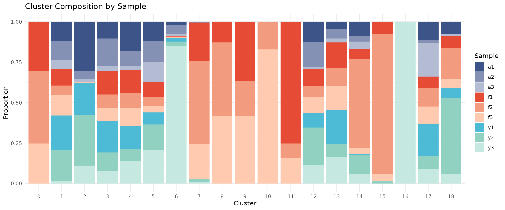
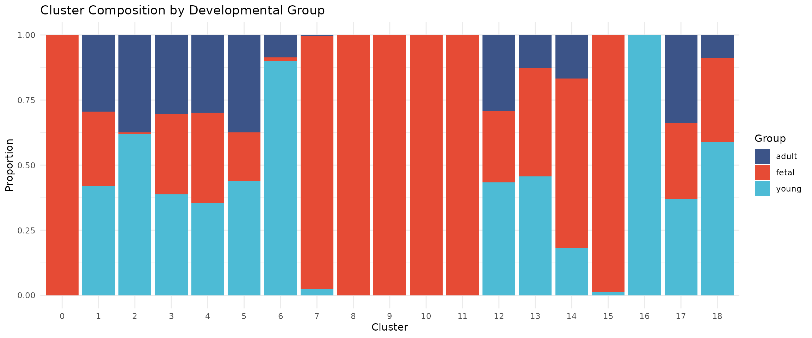

Module 2: Normalisation, Integration & Clustering
Single Cell Workshop
2026-01-14
Source:vignettes/02_integration_clustering.Rmd
02_integration_clustering.RmdIntroduction
After quality control, we have a dataset of high-quality cells. However, before we can identify cell types, we must address two important challenges:
Technical variation: Raw count data is affected by differences in sequencing depth between cells. A cell with more total counts will appear to have higher expression of most genes, even if the underlying biology is identical. Normalisation removes this technical variation.
Batch effects: Cells processed in different batches (different days, different samples) may show systematic differences unrelated to biology. Integration methods correct for these batch effects while preserving true biological variation.
In this module, we normalise the data using SCTransform, integrate samples using Harmony, and identify cell clusters using graph-based clustering.
The overall workflow follows a standard single cell analysis pipeline:
Raw counts → Normalisation → PCA → Integration → UMAP → ClusteringEach step builds upon the previous one, progressively transforming the data from raw gene counts into biologically interpretable cell clusters.
Why Normalise?
Consider two cells: Cell A has 5,000 total UMI counts, while Cell B has 10,000. If Gene X has 100 counts in Cell A and 200 counts in Cell B, are these cells different? Not necessarily—both cells have 2% of their counts from Gene X. Without normalisation, we would incorrectly conclude that Cell B has higher expression.
SCTransform (Hafemeister & Satija, 2019) addresses this by: 1. Modelling the relationship between gene expression and sequencing depth 2. Computing Pearson residuals that remove the effect of sequencing depth 3. Identifying highly variable genes for downstream analysis
Why Integrate?
Cells from different samples may cluster by sample rather than by cell type due to batch effects. This makes it difficult to compare cell types across conditions. Harmony (Korsunsky et al., 2019) corrects batch effects by: 1. Embedding cells in a low-dimensional space (PCA) 2. Iteratively adjusting embeddings so that samples are mixed within cell type clusters 3. Preserving biological variation while removing technical variation
Learning Objectives
By the end of this module, you will be able to:
- Understand why normalisation is necessary for scRNA-seq data
- Apply SCTransform normalisation to single cell data
- Perform dimensionality reduction with PCA
- Integrate multiple samples using Harmony
- Visualise cells using UMAP
- Identify cell clusters using graph-based clustering
Colour Palette
We use a consistent colour scheme throughout the workshop:
# Developmental group colours (lowercase to match data)
group_colors <- c(
"fetal" = "#E64B35",
"young" = "#4DBBD5",
"adult" = "#3C5488"
)
# Sample colours - shades within each group
sample_colors <- c(
"f1" = "#E64B35", "f2" = "#F39B7F", "f3" = "#FFCAB0",
"y1" = "#4DBBD5", "y2" = "#91D1C2", "y3" = "#C5E8E0",
"a1" = "#3C5488", "a2" = "#8491B4", "a3" = "#B4BCD4"
)Loading Filtered Data
We begin by loading the quality-controlled data from Module 1:
# Load the QC-filtered Seurat object
data_dir <- "../data"
seu <- readRDS(file.path(data_dir, "processed/01_qc_filtered.rds"))
# Examine the object dimensions
dim(seu)## [1] 18953 47405Let us verify the cell counts per sample:
table(seu$sample)##
## a1 a2 a3 f1 f2 f3 y1 y2 y3
## 3998 2605 1226 7952 10389 7489 4306 4695 4745Downsampling for Computational Efficiency
The full dataset contains over 40,000 cells. While modern laptops can handle this, processing time can be lengthy during a workshop. We downsample to 10,000 cells to ensure the analysis runs quickly while still capturing the biological diversity of the dataset.
Importantly, we use stratified sampling to ensure that all samples are represented proportionally. This preserves the relative contribution of each sample to the final dataset.
set.seed(42) # For reproducibility
# Target number of cells
n_target <- 10000
# Calculate cells to sample from each sample (proportional)
cells_per_sample <- seu@meta.data %>%
group_by(sample) %>%
summarise(
n_cells = n(),
.groups = "drop"
) %>%
mutate(
proportion = n_cells / sum(n_cells),
n_sample = round(proportion * n_target)
)
# Adjust to ensure we get exactly n_target cells
# Add or remove from the largest group
diff <- n_target - sum(cells_per_sample$n_sample)
if (diff != 0) {
largest_sample <- which.max(cells_per_sample$n_cells)
cells_per_sample$n_sample[largest_sample] <-
cells_per_sample$n_sample[largest_sample] + diff
}
cells_per_sample## # A tibble: 9 × 4
## sample n_cells proportion n_sample
## <chr> <int> <dbl> <dbl>
## 1 a1 3998 0.0843 843
## 2 a2 2605 0.0550 550
## 3 a3 1226 0.0259 259
## 4 f1 7952 0.168 1677
## 5 f2 10389 0.219 2192
## 6 f3 7489 0.158 1580
## 7 y1 4306 0.0908 908
## 8 y2 4695 0.0990 990
## 9 y3 4745 0.100 1001Now we sample cells from each group:
# Sample cells from each sample
set.seed(42)
sampled_cells <- lapply(unique(seu$sample), function(s) {
# Get cells for this sample
cells <- colnames(seu)[seu$sample == s]
# Number to sample
n_to_sample <- cells_per_sample$n_sample[cells_per_sample$sample == s]
# Sample
sample(cells, size = min(n_to_sample, length(cells)))
})
sampled_cells <- unlist(sampled_cells)
# Subset the Seurat object
seu <- subset(seu, cells = sampled_cells)
# Verify the downsampling
cat("Downsampling complete:\n")## Downsampling complete:## - Total cells: 10000## - Samples represented: 9
# Cells per sample after downsampling
table(seu$sample)##
## a1 a2 a3 f1 f2 f3 y1 y2 y3
## 843 550 259 1677 2192 1580 908 990 1001Normalisation with SCTransform
Normalisation is one of the most critical steps in single cell analysis. Unlike bulk RNA-seq, where samples have similar total counts, single cells can vary by orders of magnitude in their total UMI counts due to differences in cell size, RNA content, and capture efficiency.
SCTransform (Hafemeister & Satija, 2019) uses regularised negative binomial regression to normalise UMI count data. This approach:
- Models the relationship between observed counts and sequencing depth for each gene using a negative binomial distribution
- Computes Pearson residuals that represent the deviation from expected expression given the sequencing depth
- Identifies genes with high biological variability (variable features) that will drive downstream analyses
The key insight is that highly expressed genes show more variance simply due to sampling effects. SCTransform accounts for this by modelling the mean-variance relationship, allowing fair comparison across genes with different expression levels.
The vst.flavor = "v2" option uses an improved algorithm
(Choudhary & Satija, 2022) that:
- Uses geometric mean of library size as reference (more robust)
- Implements improved regularisation for better handling of outliers
- Provides more stable results on large datasets
# Run SCTransform normalisation
# This may take 1-2 minutes
set.seed(42) # For reproducibility
seu <- SCTransform(
seu,
vst.flavor = "v2",
seed.use = 42,
verbose = FALSE
)SCTransform automatically identifies highly variable genes. Let us examine the top variable features:
# Get the top 10 variable features
top_features <- head(VariableFeatures(seu), 10)
top_features## [1] "F13A1" "NRXN1" "CNTNAP2" "ACSM3" "XKR4" "KAZN"
## [7] "PKHD1L1" "LINC02388" "NEGR1" "LDB2"We can visualise the mean-variance relationship:
# Plot variable features
VariableFeaturePlot(seu) +
ggtitle("Variable Features (SCTransform)") +
theme_minimal()
Dimensionality Reduction with PCA
Single cell data is high-dimensional—we measure expression of thousands of genes per cell. This creates challenges for visualisation and analysis:
- Computational cost: Calculating distances between cells in 20,000 dimensions is slow
- Curse of dimensionality: In high dimensions, distances become less meaningful
- Noise: Many genes contain more noise than signal
Principal Component Analysis (PCA) addresses these issues by finding linear combinations of genes (principal components, PCs) that capture the most variation in the data. The first PC captures the most variance, the second PC captures the most remaining variance orthogonal to the first, and so on.
Key concepts:
- Loadings: The contribution of each gene to a PC. High loading genes “define” that component.
- Embeddings: The coordinates of each cell in PC space. Used for downstream analysis.
- Variance explained: How much of the total variation each PC captures.
After PCA, we typically use only the first 20-50 PCs, which capture most of the biological signal while discarding noise in higher components.
# Run PCA on the SCTransform-normalised data
# By default, this uses the variable features identified by SCTransform
set.seed(42)
seu <- RunPCA(seu, seed.use = 42, verbose = FALSE)Visualising PCA Results
Let us examine the top genes contributing to the first two principal components:
# Visualise genes contributing to PC1 and PC2
VizDimLoadings(seu, dims = 1:2, reduction = "pca")
We can plot cells in PCA space, coloured by sample:
# PCA plot coloured by sample
DimPlot(
seu,
reduction = "pca",
group.by = "sample",
shuffle = TRUE
) +
ggtitle("PCA - Before Integration") +
theme_minimal()
Notice how cells from different samples may cluster separately. This could reflect: - True biological differences between samples - Technical batch effects that should be removed
Selecting the Number of Dimensions
We use an elbow plot to determine how many PCs to use for downstream analysis. The elbow occurs where adding more PCs provides diminishing returns:
ElbowPlot(seu, ndims = 30) +
ggtitle("PCA Elbow Plot") +
theme_minimal()
The elbow plot helps identify where adding more PCs provides diminishing returns. For this dataset, the curve flattens around 15-20 PCs, suggesting that the first 20 dimensions capture most of the meaningful biological variation:
n_dims <- 20Integration with Harmony
When analysing data from multiple samples or batches, cells often cluster by their sample of origin rather than by cell type. This happens because each sample has unique technical characteristics (slight differences in dissociation, library preparation, sequencing) that create systematic biases.
Harmony (Korsunsky et al., 2019) is a fast and effective integration method that corrects these batch effects while preserving biological variation. The algorithm works as follows:
- Soft clustering: Cells are assigned probabilistically to multiple clusters in PCA space
- Calculate centroids: For each cluster, compute the centroid separately for each batch
- Adjust embeddings: Move cells toward the global centroid, removing batch-specific shifts
- Iterate: Repeat until convergence
The key advantage of Harmony is that it operates directly on the PCA embeddings, making it fast and memory-efficient. Unlike methods that require re-analysis of raw counts, Harmony can integrate datasets in seconds to minutes.
Important considerations:
- Over-integration: Aggressive correction can merge distinct cell types. We check this by examining marker genes after clustering.
- Under-integration: Insufficient correction leaves batch effects. We verify by checking sample mixing in UMAP.
- Biological variation: Some sample-specific patterns are real biology (e.g., disease vs healthy). Harmony should preserve these while removing technical artefacts.
# Run Harmony integration
# group.by.vars specifies which variable contains batch information
# Here we integrate by sample to remove sample-specific technical effects
set.seed(42) # Harmony has stochastic components
seu <- RunHarmony(
seu,
group.by.vars = "sample",
reduction.use = "pca",
dims.use = 1:n_dims,
verbose = FALSE
)Comparing Before and After Integration
Let us compare the embeddings before and after Harmony:
# Before integration (PCA)
p1 <- DimPlot(
seu,
reduction = "pca",
group.by = "sample",
cols = sample_colors,
shuffle = TRUE
) +
ggtitle("Before Integration (PCA)") +
theme_minimal() +
NoLegend()
# After integration (Harmony)
p2 <- DimPlot(
seu,
reduction = "harmony",
group.by = "sample",
cols = sample_colors,
shuffle = TRUE
) +
ggtitle("After Integration (Harmony)") +
theme_minimal()
p1 + p2
After Harmony, cells from different samples should be more mixed, while cells of the same type should remain close together.
UMAP Visualisation
While PCA is excellent for capturing global structure and variance, it uses linear projections that cannot represent complex, non-linear relationships between cells. UMAP (Uniform Manifold Approximation and Projection; McInnes et al., 2018) addresses this limitation.
UMAP works by:
- Building a high-dimensional graph: Connect each cell to its nearest neighbours in the high-dimensional space (Harmony embeddings)
- Optimising a low-dimensional representation: Find 2D coordinates that preserve the neighbour relationships as much as possible
Key properties of UMAP:
- Local structure preserved: Cells that are close in the original space remain close in UMAP
- Global structure approximate: Distances between distant groups are less meaningful
- Clusters appear as islands: Distinct cell types typically form separate “islands” in UMAP space
Important caveats:
- UMAP is primarily for visualisation, not for quantitative analysis
- The size and density of clusters in UMAP do not reflect the number of cells
- Do not over-interpret distances between clusters
We run UMAP on the Harmony-corrected embeddings to ensure batch effects do not distort the visualisation:
set.seed(42) # UMAP is stochastic - seed ensures reproducible embeddings
seu <- RunUMAP(
seu,
reduction = "harmony",
dims = 1:n_dims,
seed.use = 42,
verbose = FALSE
)UMAP by Sample and Group
# UMAP coloured by sample
p1 <- DimPlot(
seu,
reduction = "umap",
group.by = "sample",
cols = sample_colors,
shuffle = TRUE
) +
ggtitle("UMAP - By Sample") +
theme_minimal()
# UMAP coloured by developmental group
p2 <- DimPlot(
seu,
reduction = "umap",
group.by = "group",
cols = group_colors,
shuffle = TRUE
) +
ggtitle("UMAP - By Group") +
theme_minimal()
p1 + p2
The cells from different samples should now be well-mixed within cell type clusters, indicating successful batch correction.
Graph-Based Clustering
Clustering identifies groups of cells with similar gene expression profiles. Unlike traditional k-means clustering, single cell analysis typically uses graph-based clustering, which does not require specifying the number of clusters in advance.
Why Graph-Based Clustering?
Traditional clustering methods like k-means have limitations for single cell data:
- They require pre-specifying the number of clusters (k)
- They assume spherical clusters of similar size
- They are sensitive to outliers
Graph-based clustering overcomes these limitations by representing cells as a network and identifying densely connected communities. This approach naturally handles:
- Variable numbers of cell types
- Clusters of different sizes
- Complex cluster shapes
The Two-Step Process
Seurat implements graph-based clustering in two steps:
Step 1: Build a K-Nearest Neighbour (KNN) Graph
Each cell is connected to its K nearest neighbours in the reduced dimensional space (Harmony embeddings). Two cells are connected if they have similar gene expression profiles. The result is a graph where:
- Nodes = cells
- Edges = connections between similar cells
- Edge weights = strength of similarity
Step 2: Community Detection (Louvain Algorithm)
The Louvain algorithm identifies “communities” of densely connected cells. It optimises modularity—a measure of how much more densely connected cells within a community are compared to random expectation. The algorithm:
- Starts with each cell in its own community
- Iteratively moves cells between communities to improve modularity
- Aggregates communities and repeats until no further improvement
Building the Neighbour Graph
The FindNeighbors() function constructs a shared
nearest neighbour (SNN) graph. Unlike simple KNN, two cells are
connected based on how many neighbours they share, not just whether they
are neighbours. This makes clustering more robust to noise.
seu <- FindNeighbors(
seu,
reduction = "harmony",
dims = 1:n_dims,
verbose = FALSE
)Finding Clusters
The resolution parameter is the main tuning parameter for clustering. It controls the granularity of the identified clusters:
- Lower resolution (0.1-0.3): Produces fewer, larger clusters. Identifies major cell types but may merge subtypes.
- Medium resolution (0.4-0.6): Balances major types and subtypes. Often a good starting point.
- Higher resolution (0.8-1.2): Produces more, smaller clusters. Can reveal rare subtypes but may over-split continuous populations.
There is no “correct” resolution—the appropriate choice depends on the biological question. If you are interested in major cell types, use lower resolution. If you want to identify rare subtypes, use higher resolution.
We test a range of resolutions from 0.1 to 1.0 to understand how clusters behave across the resolution spectrum:
# Test resolutions from 0.1 to 1.0 in steps of 0.1
resolutions <- seq(0.1, 1.0, by = 0.1)
set.seed(42) # Louvain clustering has stochastic components
for (res in resolutions) {
seu <- FindClusters(
seu,
resolution = res,
verbose = FALSE
)
}
# List the clustering results
grep("SCT_snn_res", colnames(seu@meta.data), value = TRUE)## [1] "SCT_snn_res.0.1" "SCT_snn_res.0.2" "SCT_snn_res.0.3" "SCT_snn_res.0.4"
## [5] "SCT_snn_res.0.5" "SCT_snn_res.0.6" "SCT_snn_res.0.7" "SCT_snn_res.0.8"
## [9] "SCT_snn_res.0.9" "SCT_snn_res.1"Let us see how many clusters each resolution produces:
# Count clusters at each resolution
cat("Number of clusters at each resolution:\n")## Number of clusters at each resolution:
for (res in resolutions) {
col_name <- paste0("SCT_snn_res.", res)
n_clusters <- length(unique(seu@meta.data[[col_name]]))
cat(sprintf(" Resolution %.1f: %d clusters\n", res, n_clusters))
}## Resolution 0.1: 13 clusters
## Resolution 0.2: 16 clusters
## Resolution 0.3: 18 clusters
## Resolution 0.4: 19 clusters
## Resolution 0.5: 20 clusters
## Resolution 0.6: 20 clusters
## Resolution 0.7: 20 clusters
## Resolution 0.8: 22 clusters
## Resolution 0.9: 23 clusters
## Resolution 1.0: 25 clustersVisualising Cluster Resolution with Clustree
Clustree (Zappia & Oshlack, 2018) is a diagnostic tool that visualises how clusters evolve across resolutions. Each node represents a cluster at a given resolution, and edges show how cells flow between clusters.
clustree(seu, prefix = "SCT_snn_res.")
How to interpret the clustree plot:
Read from top to bottom: Resolution increases downward. At the top (res=0.1), there are few clusters. As you move down, clusters split.
Thick edges indicate stable clusters: Most cells stay together as resolution increases. These likely represent robust, biologically distinct populations.
Thin, branching edges indicate unstable clusters: Cells are split across multiple downstream clusters. This may represent over-clustering of a continuous population, or genuine subtypes being resolved.
Look for the “Goldilocks zone”: A resolution where most clusters are stable (thick edges going straight down) but before excessive splitting begins.
Node size is proportional to the number of cells in that cluster.
Selecting a Resolution
Based on the clustree visualisation, we select a working resolution. Key considerations:
- Are the major cell types separated? (Should happen at low resolution)
- Are biologically meaningful subtypes visible? (May require medium resolution)
- Is there excessive splitting of continuous populations? (Sign of too high resolution)
The appropriate resolution depends on the dataset and biological question. For this heart development dataset, we observe that:
- Resolution 0.1-0.2 groups cells into broad categories but may merge distinct populations
- Resolution 0.3-0.4 produces a stable cluster structure
- Higher resolutions progressively split clusters further
We select resolution 0.4 for this analysis, which produces 17 clusters with good separation of major cell types. Notably, several clusters are strongly enriched for fetal cells (>95%), reflecting the distinct transcriptional programmes active during early heart development. The remaining clusters contain cells from multiple developmental stages, representing shared cell types like fibroblasts, endothelial cells, and immune cells that are present throughout development:
# Set the active identity to our chosen resolution
selected_res <- 0.4
Idents(seu) <- paste0("SCT_snn_res.", selected_res)
# Store in a standard column
seu$seurat_clusters <- Idents(seu)
# How many clusters?
cat("Clustering results:\n")## Clustering results:
cat("- Resolution:", selected_res, "\n")## - Resolution: 0.4## - Number of clusters: 19UMAP with Clusters
Now we visualise the clusters on the UMAP. Each cluster is assigned a number (0, 1, 2, …) rather than a biological label—we will assign cell type names in the next module.
DimPlot(
seu,
reduction = "umap",
group.by = "seurat_clusters",
label = TRUE,
label.size = 5
) +
ggtitle(paste0("UMAP - Clusters (Resolution ", selected_res, ")")) +
theme_minimal() +
NoLegend()
Each cluster should form a distinct region in UMAP space. Clusters that overlap spatially may represent closely related cell types or states.
Cluster Composition by Sample
A key quality check is examining whether clusters contain cells from multiple samples. If a cluster is dominated by a single sample, it may represent a technical artefact rather than a true cell type.
# Calculate composition
composition <- seu@meta.data %>%
group_by(seurat_clusters, sample) %>%
summarise(n = n(), .groups = "drop") %>%
group_by(seurat_clusters) %>%
mutate(proportion = n / sum(n))
# Stacked bar plot with our sample colour palette
ggplot(composition, aes(x = seurat_clusters, y = proportion, fill = sample)) +
geom_bar(stat = "identity") +
scale_fill_manual(values = sample_colors) +
labs(
x = "Cluster",
y = "Proportion",
fill = "Sample",
title = "Cluster Composition by Sample"
) +
theme_minimal()
If integration worked well, each cluster should contain cells from multiple samples (mixed colours).
Cluster Composition by Group
# Calculate composition by group
composition_group <- seu@meta.data %>%
group_by(seurat_clusters, group) %>%
summarise(n = n(), .groups = "drop") %>%
group_by(seurat_clusters) %>%
mutate(proportion = n / sum(n))
# Stacked bar plot with our group colour palette
ggplot(composition_group, aes(x = seurat_clusters, y = proportion, fill = group)) +
geom_bar(stat = "identity") +
scale_fill_manual(values = group_colors) +
labs(
x = "Cluster",
y = "Proportion",
fill = "Group",
title = "Cluster Composition by Developmental Group"
) +
theme_minimal()
Some clusters may be enriched for specific developmental stages, reflecting biological differences in cell type composition.
Save Checkpoint
We save the integrated and clustered object for use in the next module:
# Create output directory if needed
output_dir <- "../data/processed"
if (!dir.exists(output_dir)) {
dir.create(output_dir, recursive = TRUE)
}
# Save the object
output_file <- file.path(output_dir, "02_integrated_clustered.rds")
saveRDS(seu, output_file)
message("Saved: ", output_file)Summary
In this module, we:
- Downsampled to 10000 cells using stratified sampling
- Normalised with SCTransform v2
- Reduced dimensions with PCA (20 components)
- Integrated samples with Harmony
- Visualised with UMAP
- Identified 19 clusters at resolution 0.4
The clustered object is now ready for cell type annotation in Module 3.
Session Information
## R version 4.5.2 (2025-10-31)
## Platform: x86_64-pc-linux-gnu
## Running under: Ubuntu 24.04.3 LTS
##
## Matrix products: default
## BLAS: /usr/lib/x86_64-linux-gnu/openblas-pthread/libblas.so.3
## LAPACK: /usr/lib/x86_64-linux-gnu/openblas-pthread/libopenblasp-r0.3.26.so; LAPACK version 3.12.0
##
## locale:
## [1] LC_CTYPE=C.UTF-8 LC_NUMERIC=C LC_TIME=C.UTF-8
## [4] LC_COLLATE=C.UTF-8 LC_MONETARY=C.UTF-8 LC_MESSAGES=C.UTF-8
## [7] LC_PAPER=C.UTF-8 LC_NAME=C LC_ADDRESS=C
## [10] LC_TELEPHONE=C LC_MEASUREMENT=C.UTF-8 LC_IDENTIFICATION=C
##
## time zone: UTC
## tzcode source: system (glibc)
##
## attached base packages:
## [1] stats graphics grDevices datasets utils methods base
##
## other attached packages:
## [1] future_1.68.0 RColorBrewer_1.1-3 clustree_0.5.1 ggraph_2.2.2
## [5] tibble_3.3.1 tidyr_1.3.2 dplyr_1.1.4 patchwork_1.3.2
## [9] ggplot2_4.0.1 harmony_1.2.4 Rcpp_1.1.1 Seurat_5.4.0
## [13] SeuratObject_5.3.0 sp_2.2-0
##
## loaded via a namespace (and not attached):
## [1] jsonlite_2.0.0 magrittr_2.0.4 spatstat.utils_3.2-1
## [4] farver_2.1.2 rmarkdown_2.30 fs_1.6.6
## [7] ragg_1.5.0 vctrs_0.6.5 ROCR_1.0-11
## [10] memoise_2.0.1 spatstat.explore_3.6-0 htmltools_0.5.9
## [13] sass_0.4.10 sctransform_0.4.3 parallelly_1.46.1
## [16] KernSmooth_2.23-26 bslib_0.9.0 htmlwidgets_1.6.4
## [19] desc_1.4.3 ica_1.0-3 plyr_1.8.9
## [22] plotly_4.11.0 zoo_1.8-15 cachem_1.1.0
## [25] igraph_2.2.1 mime_0.13 lifecycle_1.0.5
## [28] pkgconfig_2.0.3 Matrix_1.7-4 R6_2.6.1
## [31] fastmap_1.2.0 fitdistrplus_1.2-4 shiny_1.12.1
## [34] digest_0.6.39 tensor_1.5.1 RSpectra_0.16-2
## [37] irlba_2.3.5.1 textshaping_1.0.4 labeling_0.4.3
## [40] progressr_0.18.0 spatstat.sparse_3.1-0 httr_1.4.7
## [43] polyclip_1.10-7 abind_1.4-8 compiler_4.5.2
## [46] withr_3.0.2 backports_1.5.0 S7_0.2.1
## [49] viridis_0.6.5 fastDummies_1.7.5 ggforce_0.5.0
## [52] MASS_7.3-65 tools_4.5.2 lmtest_0.9-40
## [55] otel_0.2.0 httpuv_1.6.16 future.apply_1.20.1
## [58] goftest_1.2-3 glue_1.8.0 nlme_3.1-168
## [61] promises_1.5.0 grid_4.5.2 checkmate_2.3.3
## [64] Rtsne_0.17 cluster_2.1.8.1 reshape2_1.4.5
## [67] generics_0.1.4 gtable_0.3.6 spatstat.data_3.1-9
## [70] data.table_1.18.0 utf8_1.2.6 tidygraph_1.3.1
## [73] spatstat.geom_3.6-1 RcppAnnoy_0.0.23 ggrepel_0.9.6
## [76] RANN_2.6.2 pillar_1.11.1 stringr_1.6.0
## [79] spam_2.11-3 RcppHNSW_0.6.0 later_1.4.5
## [82] splines_4.5.2 tweenr_2.0.3 lattice_0.22-7
## [85] renv_1.1.5 survival_3.8-3 deldir_2.0-4
## [88] tidyselect_1.2.1 miniUI_0.1.2 pbapply_1.7-4
## [91] knitr_1.51 gridExtra_2.3 scattermore_1.2
## [94] RhpcBLASctl_0.23-42 xfun_0.55 graphlayouts_1.2.2
## [97] matrixStats_1.5.0 stringi_1.8.7 lazyeval_0.2.2
## [100] yaml_2.3.12 evaluate_1.0.5 codetools_0.2-20
## [103] BiocManager_1.30.27 cli_3.6.5 uwot_0.2.4
## [106] xtable_1.8-4 reticulate_1.44.1 systemfonts_1.3.1
## [109] jquerylib_0.1.4 globals_0.18.0 spatstat.random_3.4-3
## [112] png_0.1-8 spatstat.univar_3.1-5 parallel_4.5.2
## [115] pkgdown_2.2.0 dotCall64_1.2 listenv_0.10.0
## [118] viridisLite_0.4.2 scales_1.4.0 ggridges_0.5.7
## [121] purrr_1.2.1 rlang_1.1.7 cowplot_1.2.0